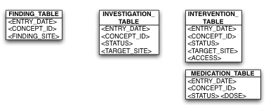

This is the object model to relational model mapping structure where every class in
the object model is mapped to a separate table.
The following are the salient features of this
strategy.
- This strategy chooses to ignore the inheritance hierarchy.
- A table for each concrete object is created.
- Relationships between tables are managed by using foreign keys and joins across
tables at run time.
- The application manages the creation and updates for all the tables
dynamically.
- This approach has the advantage that we have distinct tables for each class and
we know how to query each entry against the class.
- The disadvantage of this approach is the number of queries that have to be run
against the database in order to answer a query across the class hierarchy.
- For query generation and retrieval, the application will manage all appropriate
tables that will have to be queried o Involves multiple selects and joins across
different tables.
For example, in the figure shown, in order to retrieve all patients
who had a procedure that happened on a given date, we would have to perform the
following selects
- Select PATIENT_ID FROM INTERVENTIONS WHERE INTERVENTION_DATE = ?
- UNION
- Select PATIENT_ID FROM INTERVENTIONS WHERE MEDICATION_DATE = ?
- UNION
- Select PATIENT_ID FROM INTERVENTIONS WHERE INVESTIGATION_DATE = ?
